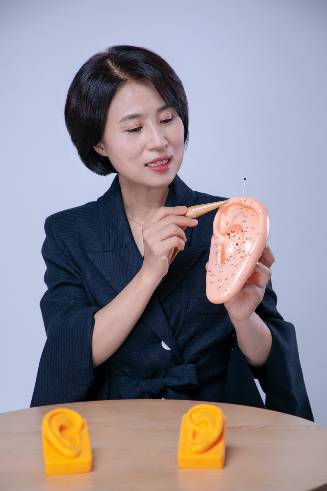

단계별 이혈 교육
입문 · 심화 · 강사 3단계로 이어지는 25주 정규과정. 보고, 만지고, 기록하는 실습 중심으로 배웁니다.

ABOUT
귀에 나타난 작은 변화를 통해 한 사람의 생활 이야기를 이해하고,
스스로 건강을 돌볼 수 있도록 돕습니다.
쉬운 말과 정확한 시범으로 이혈테라피를 가르칩니다.
CAREER
LECTURES
단계별 정규 교육부터 자격 과정, 맞춤 특강까지 함께합니다.

입문 · 심화 · 강사 3단계로 이어지는 25주 정규과정. 보고, 만지고, 기록하는 실습 중심으로 배웁니다.
귀운동지도사 · 귀분석지도사 · 귀분석교육지도사 (각 2급·1급). 배운 것을 나누는 전문가로 성장합니다.
기업 · 기관 맞춤 이혈 건강 특강과 1:1 이혈건강관리 상담으로 생활 속 건강 습관을 함께 찾습니다.
GALLERY



CONTACT
강의 요청, 자격 과정, 건강상담 모두 환영합니다.

안녕하세요 🌿
이혈테라피 조재숙입니다
어디로 안내해 드릴까요?